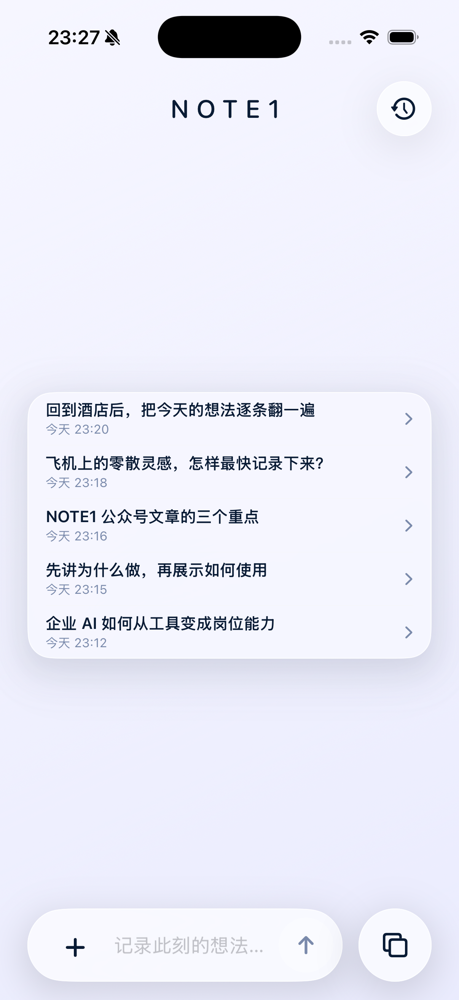
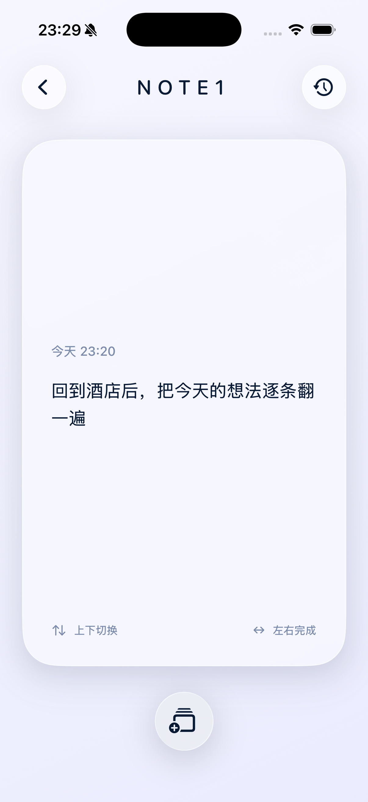
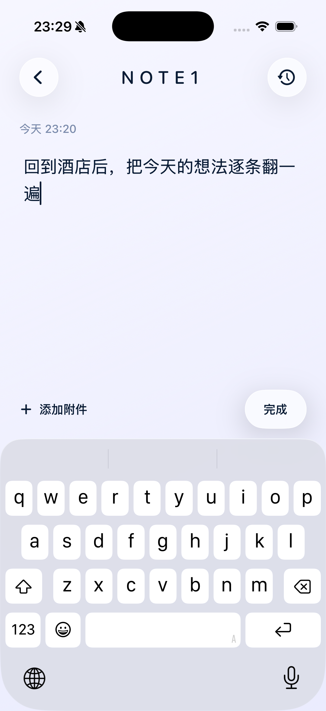
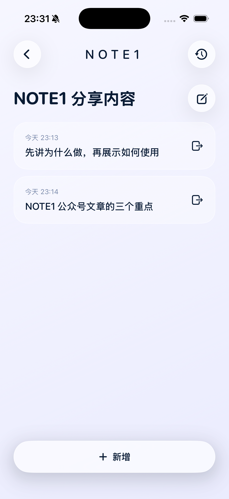

它的名字叫 NOTE1。
它的诞生，很大程度来自于《置身钉内》这篇文章， NOTE1 的名字以及 UI 交互都参考了文中的「 ONE 」。
但真正驱动我把它做出来的，是我一直没找到一款适合自己的“备忘录”，最后索性自己做了一个。
我出差的时候，坐在高铁或飞机上，望着窗外，脑子里会冒出很多想法和不完整的念头。这些灵感来得快，去得也快。我尝试过几个软件用来记录它们。最开始是微信文件传输助手，后来也试过用 iphone 自带的备忘录和无边记。可实际用下来，每个都差点意思，不够适合我。
文件传输助手记录很方便，但看着太杂乱

无边记和备忘录类似，功能足够强大，但是对我来说上手难度有点高了，我希望操作可以更简单一些
打开 App 后，正中央显示最近记录的几条灵感，点开即可补充续写；底部是输入区，可以添加照片和文件。

NOTE1 首页
我没有在 NOTE1 里加入单独的语音录入功能。
现在大部分输入法 app 已经有成熟的语音转文字能力，我何必再班门弄斧，与其浪费时间做一个空有其表的功能，那不如不做。
点击首页右下角的按钮，进入回看功能。这个交互方式参考了「 ONE 」提出的卡片样式，采用了类似于短视频的滑动操作进行翻阅。向上或向下切换前后内容；向左或向右滑动，把当前灵感标记为完成；点按卡片进入编辑状态。

NOTE1 回看功能

在回看的卡片中点击进入灵感文本编辑
如果几条灵感属于同一个方向，还可以把它们放进一个灵感组。灵感组只是在记录后把相关内容聚在一起，不会在记录之前强迫先进行分类。

NOTE1 灵感组功能
在灵感出现的时候，可以快速记下来；当空闲下来的时候，再慢慢翻阅。回想当时写下内容，再由它激发新的灵感。
NOTE1 目前处于测试阶段，还没有上架 App Store 。如果你也有很多零散灵感，暂时还缺少一个合适的 app 帮助你记录它，倘若 NOTE1 真的能解决你的需求，请你告诉我。如果是对 NOTE1 有意见或是建议，欢迎随时和我留言沟通。
本文由 AI 辅助创作，作者进行了实测验证和编辑修改。